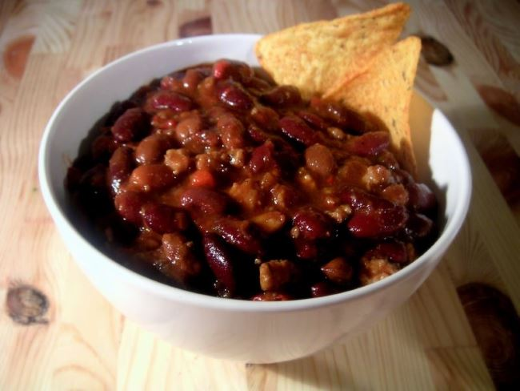

Chili Con Carne Das feurig-scharfe Gerichtaus dem Süden der USA Zutaten Zubereitung Beilagen Getränke  Bowl of Chili con Carne von Carstor, Wikipedia, Lizenz: CC BY-SA 2.5 Zutaten 4 Portionen 500 g Hackfleisch vom Rind 1 rote Chilischote 2 grosse Zwiebeln 1 Knoblauchzehe 1 TL gemahlener Kreuzkümmel 2 TL Chilipulver 2 grosse Dosen gehackte Tomaten 2 Dosen Kidneybohnen Salz Pfeffer Zubereitung Zwiebeln und Knoblauch klein schneiden und in einem grossen Topf mit etwas Öl 5 Minuten andünsten. Kreuzkümmel, Chilipulver und gehacke Chilischoten hinzugeben und kurz dünsten. Hackfleisch in den Topf geben und bei grosser Hitze anbraten und dabei in kleine Krümel zerkleinern. Tomaten hinzugeben und mit Salz und Pfeffer würzen. Bei geringer Hitze 45 Minuten köcheln lassen, dann die Bohnen hinzufügen, gut umrühren und weitere 45 Minuten köcheln lassen. Beilagen Dazu passt am besten Weissbrot (Baguette, Ciabata). Ein Salat ist auch eine gute Ergänzung. Getränke Besonders gut schmeckt ein kühles Bier zum heissen Chili.